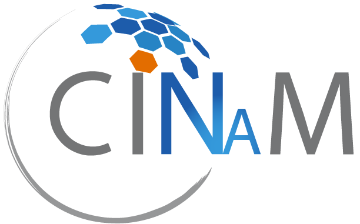

Bilan Technique des Missions • BTS SIO SISR
Centre Interdisciplinaire de Nanoscience de Marseille
Bilan approfondi des projets d'infrastructure, de réseaux, d'accès distants et de cybersécurité au CINaM (CNRS)
Présentation de l'organisme
Le CINaM et son Service Informatique
Un laboratoire de recherche d'envergure nationale
Le Centre Interdisciplinaire de Nanoscience de Marseille (CINaM) est une unité mixte de recherche (UMR 7325) rattachée au CNRS et à Aix-Marseille Université sur le campus de Luminy.
Le service informatique pilote la modernisation des infrastructures, la sécurisation avancée des accès et la mise en œuvre de solutions d'authentification et de supervision de pointe.
Fiche d'identité du stage :
• Période : Du 22 juin 2026 au 03 août 2026 (6 semaines)
• Lieu : Campus de Luminy, 13009 Marseille
• Domaine : Systèmes, Réseaux, Sécurité & Virtualisation

Environnement technologique
Stack & Outils Déployés
Centralisation des services, conteneurisation et passerelles d'accès sécurisées pour les chercheurs.
Refonte physique des baies, authentification centralisée et supervision des menaces.
Réalisations techniques approfondies
Détail des Projets Réalisés
1. Préparation, configuration et sécurisation des postes pour les chercheurs
Standardisation globale des stations de travail livrées aux chercheurs, garantissant un environnement applicatif homogène, conforme aux exigences du CNRS et connecté au domaine institutionnel.
- Nettoyage système : Suppression de la suite bureautique pré-installée d'origine sur les machines neuves.
- Bureautique institutionnelle : Déploiement de la version propre d'Office récupérée depuis le NAS du laboratoire et activation des licences.
- Outils & Communication : Installation de Mozilla Firefox, Mozilla Thunderbird et du logiciel d'analyse scientifique Origin (avec saisie de licence).
- Sécurité & Sauvegarde : Activation de BitLocker, intégration de l'agent de sauvegarde Attempo Lina et de l'antivirus WithSecure. Jonction au domaine Active Directory.
2. Refonte physique des baies de brassage et interconnexion campus
Modernisation des armoires de communication pour fiabiliser le routage et optimiser le débit vers les nouveaux espaces (bâtiment Prisim).
- Brassage et câblage structuré : Nettoyage des armoires de brassage, remplacement des jarretières usagées et organisation rigoureuse des cordons cuivre et fibre optique.
- Switches Aruba & HPE Comware : Configuration des équipements d'accès, mise en place du stacking et structuration des VLANs par département de recherche.
3. Mise en place des passerelles d'accès sécurisées (Teleport & Apache Guacamole)
Déploiement de solutions modernes pour permettre aux chercheurs d'accéder à distance à leurs environnements de calcul et aux équipements du laboratoire en toute sécurité.
- Teleport : Configuration de la plateforme d'accès unifié pour centraliser et sécuriser les connexions SSH distantes aux serveurs et grappes de calcul.
- Apache Guacamole : Déploiement de la passerelle client sans agent pour permettre le contrôle à distance des postes de laboratoire et des microscopes via un simple navigateur web en RDP sécurisé.
4. Fédération d'identités et authentification forte (Keycloak & PrivacyIDEA)
Renforcement majeur de la sécurité des authentifications pour l'ensemble des services du laboratoire.
- Keycloak : Mise en place du SSO (Single Sign-On) et de la fédération d'identités pour centraliser les connexions aux applications internes et externes.
- PrivacyIDEA : Intégration de la solution d'authentification multifacteur (MFA / double facteur) pour valider les connexions sensibles des utilisateurs.
5. Supervision de la sécurité et règles custom sous Wazuh
Mise en place et optimisation de la plateforme de détection des menaces (SIEM/XDR).
- Déploiement des agents Wazuh : Installation sur le parc de serveurs et postes critiques pour la collecte continue des journaux d'événements.
- Création de règles personnalisées (1001+) : Rédaction et intégration de règles de détection spécifiques pour identifier rapidement les comportements suspects et les tentatives d'intrusion ciblées sur le réseau du labo.
Conclusion du stage
Bilan Professionnel & Personnel
Acquis et apports de l'expérience
Cette expérience au CINaM (CNRS) dans le cadre de mon BTS SIO option SISR m'a permis de travailler sur des technologies de pointe en matière d'infrastructure, d'accès distants sécurisés et de cybersécurité institutionnelle.
La mise en œuvre concrète du brassage réseau, du SIEM Wazuh avec ses règles custom, des passerelles Teleport et Guacamole, ainsi que des solutions d'authentification Keycloak et PrivacyIDEA m'a offert une vision globale et opérationnelle de la sécurisation des systèmes d'information modernes.